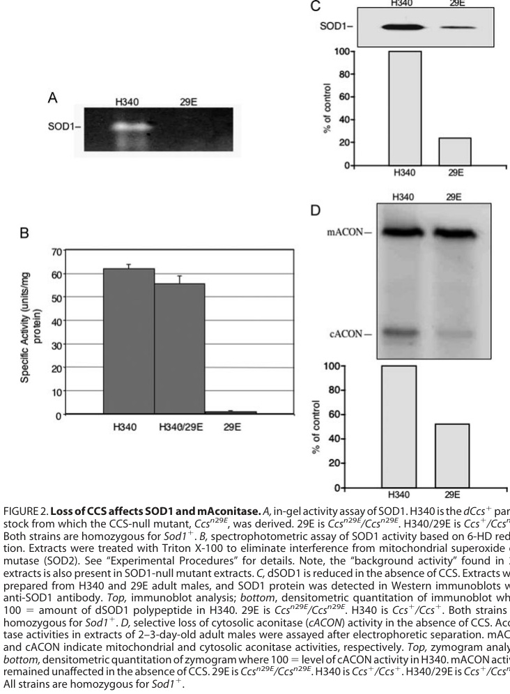

Copper chaperone for superoxide dismutase 1 (SOD1). Ccs delivers copper to SOD1 and is essential for SOD1 activation, protein stability, and proper disulfide bond formation. CCS-null mutants phenocopy SOD1 deficiency with reduced lifespan, hypersensitivity to oxidative stress, and loss of cytosolic aconitase activity. Uniquely among characterized CCS proteins, Drosophila Ccs lacks the N-terminal MXCXXC copper-binding motif but retains the C-terminal CXC motif essential for copper transfer. Despite some annotations, Ccs is NOT itself a superoxide dismutase enzyme - those IEA annotations derive from misannotation of the UniProt record.
| GO Term | Evidence | Action | Reason |
|---|---|---|---|
|
GO:0019430
removal of superoxide radicals
|
IEA
GO_REF:0000108 |
REMOVE |
Summary: INCORRECT. This annotation derives from the erroneous UniProt classification of Ccs as a superoxide dismutase (EC 1.15.1.1). Ccs is NOT an SOD enzyme - it is the copper chaperone for SOD1 that delivers copper and promotes SOD1 stability. The actual superoxide dismutase enzyme in the pathway is SOD1/dSod1 [PMID:18948262 "CCS-null mutants phenotypically resemble SOD1-null mutants"]. Falcon deep research confirms Ccs acts upstream as a maturation factor, not the catalytic enzyme.
Supporting Evidence:
file:DROME/Ccs/Ccs-deep-research-falcon.md
CCS has a specialized **post-translational maturation role** rather than acting as the SOD catalytic enzyme itself: it **delivers copper to apo-SOD1** and promotes formation of the mature active enzyme.
|
|
GO:0098869
cellular oxidant detoxification
|
IEA
GO_REF:0000108 |
MARK AS OVER ANNOTATED |
Summary: This is an over-annotation. While Ccs indirectly contributes to oxidant detoxification by activating SOD1, the direct cellular oxidant detoxification activity belongs to SOD1 itself. Ccs functions as a copper chaperone upstream of this process [PMID:18948262]. Falcon deep research places Ccs in the copper-handling branch that matures SOD1, with detoxification performed by the resulting active SOD1.
Supporting Evidence:
file:DROME/Ccs/Ccs-deep-research-falcon.md
The primary function of Drosophila Ccs is **post-translational activation and stabilization of cytosolic Cu,Zn-SOD1 (dSOD1)**, via copper delivery and associated maturation chemistry; in CCS-null flies, SOD1 activity becomes essentially undetectable and dSOD1 protein is strongly reduced
|
|
GO:0004784
superoxide dismutase activity
|
IEA
GO_REF:0000116 |
REMOVE |
Summary: INCORRECT. This annotation derives from Rhea mapping based on UniProt's erroneous EC 1.15.1.1 assignment. Ccs does NOT have superoxide dismutase activity - it is the copper chaperone for SOD1. The dismutation of superoxide is catalyzed by SOD1, not Ccs [PMID:18948262 "Copper is inserted into the SOD1 apoprotein by a specific chaperone, the copper chaperone for SOD1 (CCS)"]. Falcon deep research independently confirms Ccs is a metallochaperone, not the SOD enzyme.
Supporting Evidence:
file:DROME/Ccs/Ccs-deep-research-falcon.md
CCS has a specialized **post-translational maturation role** rather than acting as the SOD catalytic enzyme itself: it **delivers copper to apo-SOD1** and promotes formation of the mature active enzyme.
|
|
GO:0005507
copper ion binding
|
IEA
GO_REF:0000002 |
ACCEPT |
Summary: Accept. As a copper chaperone, Ccs must bind copper to transfer it to SOD1. Drosophila Ccs uniquely lacks the N-terminal MXCXXC copper-binding motif but retains the C-terminal CXC domain III motif that is essential for copper transfer [PMID:18948262 "domain III contains a critical CXC copper-binding site that inserts copper"]. Falcon deep research confirms this Drosophila-specific loss of the canonical domain I motif while retaining copper-delivery function.
Supporting Evidence:
file:DROME/Ccs/Ccs-deep-research-falcon.md
A Drosophila-specific feature highlighted experimentally is that **Drosophila CCS lacks the canonical domain I MXCXXC copper-binding motif**, yet remains capable of supporting SOD1 activation
|
|
GO:0006801
superoxide metabolic process
|
IEA
GO_REF:0000002 |
MARK AS OVER ANNOTATED |
Summary: Over-annotation. Ccs does not directly metabolize superoxide. It functions upstream as a copper chaperone that activates SOD1. SOD1 is the enzyme that directly metabolizes superoxide. The term "superoxide metabolic process" belongs on SOD1, not Ccs [PMID:18948262]. Falcon deep research confirms the primary role is SOD1 maturation, not direct superoxide metabolism.
Supporting Evidence:
file:DROME/Ccs/Ccs-deep-research-falcon.md
CCS has a specialized **post-translational maturation role** rather than acting as the SOD catalytic enzyme itself: it **delivers copper to apo-SOD1** and promotes formation of the mature active enzyme.
|
|
GO:0016209
antioxidant activity
|
IEA
GO_REF:0000043 |
REMOVE |
Summary: INCORRECT. This annotation derives from UniProt keyword mapping. Ccs does not have antioxidant activity - it is a copper chaperone. The antioxidant activity (superoxide dismutation) is performed by SOD1, which Ccs activates. Ccs itself does not directly scavenge reactive oxygen species [PMID:18948262]. Falcon deep research confirms Ccs is a metallochaperone upstream of SOD1, not an antioxidant.
Supporting Evidence:
file:DROME/Ccs/Ccs-deep-research-falcon.md
CCS has a specialized **post-translational maturation role** rather than acting as the SOD catalytic enzyme itself: it **delivers copper to apo-SOD1** and promotes formation of the mature active enzyme.
|
|
GO:0016491
oxidoreductase activity
|
IEA
GO_REF:0000043 |
REMOVE |
Summary: INCORRECT. This annotation derives from UniProt keyword mapping. Ccs is not an oxidoreductase - it does not catalyze redox reactions. While CCS does have disulfide isomerase-like activity that oxidizes the intramolecular disulfide in SOD1, this is not oxidoreductase activity in the classic sense. The SOD oxidoreductase activity belongs to SOD1, not Ccs [PMID:18948262]. Falcon deep research describes the maturation as copper insertion plus a disulfide-chemistry step (transient CCS-SOD1 disulfide exchange), not a standalone oxidoreductase catalytic role.
Supporting Evidence:
file:DROME/Ccs/Ccs-deep-research-falcon.md
CCS is **catalytic** relative to SOD1, being at least **~10× less abundant** (molar) while efficiently maturing SOD1
|
|
GO:0046872
metal ion binding
|
IEA
GO_REF:0000120 |
KEEP AS NON CORE |
Summary: Accept but the more specific term GO:0005507 (copper ion binding) is already included. This general term is redundant given the more specific annotation. Ccs binds copper via its domain III CXC motif [PMID:18948262].
|
|
GO:0005737
cytoplasm
|
IDA
PMID:22758915 An inventory of peroxisomal proteins and pathways in Drosoph... |
ACCEPT |
Summary: Accept. Localization to cytoplasm is consistent with Ccs function as chaperone for cytosolic SOD1. The peroxisome proteomics study confirmed cytoplasmic localization [PMID:22758915].
Supporting Evidence:
PMID:22758915
2012 Jul 25. An inventory of peroxisomal proteins and pathways in Drosophila melanogaster.
file:DROME/Ccs/Ccs-deep-research-falcon.md
Broader CCS-family reviews indicate CCS proteins are mainly **cytosolic**, with additional localization to the **mitochondrial intermembrane space (IMS)** in other systems
|
|
GO:0005777
peroxisome
|
IDA
PMID:22758915 An inventory of peroxisomal proteins and pathways in Drosoph... |
KEEP AS NON CORE |
Summary: Accept as non-core localization. Proteomics study identified Ccs in peroxisomes. This is interesting as it suggests Ccs may also function to activate peroxisomal SOD1, though the primary function is in the cytoplasm [PMID:22758915 "An inventory of peroxisomal proteins"].
Supporting Evidence:
PMID:22758915
2012 Jul 25. An inventory of peroxisomal proteins and pathways in Drosophila melanogaster.
|
|
GO:0006979
response to oxidative stress
|
IMP
PMID:18948262 Instability of superoxide dismutase 1 of Drosophila in mutan... |
ACCEPT |
Summary: Accept. CCS-null mutants show extreme hypersensitivity to paraquat (a redox cycling agent that generates superoxide), demonstrating that Ccs is required for proper oxidative stress response via its role in activating SOD1.
Supporting Evidence:
PMID:18948262
29E displays the extreme toxic hypersensitivity to the redox cycling agent, paraquat, exhibited by SOD1-null
file:DROME/Ccs/Ccs-deep-research-falcon.md
CCS-null flies show **paraquat hypersensitivity** essentially equivalent to SOD1-null flies
|
|
GO:0008340
determination of adult lifespan
|
IMP
PMID:18948262 Instability of superoxide dismutase 1 of Drosophila in mutan... |
KEEP AS NON CORE |
Summary: Keep as non-core. CCS-null mutants show ~30% reduction in median adult lifespan. However, this is a downstream consequence of SOD1 inactivation rather than a direct molecular function of Ccs. The lifespan phenotype reflects the importance of SOD1 activation for longevity [PMID:18948262 "~30% reduction in the median adult life span"].
Supporting Evidence:
PMID:18948262
2008 Oct 23. Instability of superoxide dismutase 1 of Drosophila in mutants deficient for its cognate copper chaperone.
file:DROME/Ccs/Ccs-deep-research-falcon.md
CCS-null flies show reduced adult survival; the paper describes an approximately **30% reduction in median adult lifespan** compared with controls
|
|
GO:0016532
superoxide dismutase copper chaperone activity
|
IDA
PMID:18948262 Instability of superoxide dismutase 1 of Drosophila in mutan... |
ACCEPT |
Summary: Accept as CORE FUNCTION. This is the primary molecular function of Ccs. The study demonstrates that Ccs is required for SOD1 activation and that dCCS can substitute for yeast CCS in activating SOD1. Copper insertion into SOD1 requires CCS domain III cysteines.
Supporting Evidence:
PMID:18948262
Copper is inserted into the SOD1 apoprotein by a specific chaperone, the copper chaperone for SOD1 (CCS)
file:DROME/Ccs/Ccs-deep-research-falcon.md
The primary function of Drosophila Ccs is **post-translational activation and stabilization of cytosolic Cu,Zn-SOD1 (dSOD1)**, via copper delivery and associated maturation chemistry; in CCS-null flies, SOD1 activity becomes essentially undetectable and dSOD1 protein is strongly reduced
|
|
GO:0050821
protein stabilization
|
IDA
PMID:18948262 Instability of superoxide dismutase 1 of Drosophila in mutan... |
ACCEPT |
Summary: Accept as CORE FUNCTION. Remarkably, CCS-null flies show a striking loss of SOD1 protein (reduced to ~25% of normal), demonstrating that Ccs is required not just for SOD1 activity but for protein stability. This stabilization requires copper insertion and/or disulfide oxidation by Ccs.
Supporting Evidence:
PMID:18948262
apo-dSOD1 is unusually unstable and ... CCS affords stability to dSOD1 by activating the enzyme through copper insertion and/or disulfide oxidation
file:DROME/Ccs/Ccs-deep-research-falcon.md
steady-state SOD1 polypeptide is reduced to **~25% of wild-type**
|
The research report should be a detailed narrative explaining the function, biological processes, and localization of the gene product. Citations should be given for all claims.
You should prioritize authoritative reviews and primary scientific literature when conducting research. You can supplement
this with annotations you find in gene/protein databases, but these can be outdated or inaccurate.
We are specifically interested in the primary function of the gene - for enzymes, what reaction is catalyzed, and what is the substrate specificity? For transporters, what is the substrate? For structural proteins or adapters, what is the broader structural role? For signaling molecules, what is the role in the pathway.
We are interested in where in or outside the cell the gene product carries out its function.
We are also interested in the signaling or biochemical pathways in which the gene functions. We are less interested in broad pleiotropic effects, except where these elucidate the precise role.
Include evidence where possible. We are interested in both experimental evidence as well as inference from structure, evolution, or bioinformatic analysis. Precise studies should be prioritized over high-throughput, where available.
The Drosophila melanogaster gene Ccs is explicitly identified in primary Drosophila literature as CG17753 (FlyBase FBgn0010531) and encodes the copper chaperone for Cu,Zn superoxide dismutase (SOD1) (kirby2008instabilityofsuperoxide pages 4-5, kirby2008instabilityofsuperoxide pages 1-2). The defining functional connection is that Ccs loss causes loss of SOD1 activity/protein and oxidative-stress phenotypes, consistent with a CCS ortholog rather than unrelated “CCS” symbols used in other organisms/contexts (kirby2008instabilityofsuperoxide pages 1-2, kirby2008instabilityofsuperoxide pages 5-6).
CCS proteins are metallochaperones that support metal cofactor delivery to specific targets; in this case CCS delivers copper to SOD1 and facilitates acquisition of the mature, active enzyme state (rae2001mechanismofcuznsuperoxide pages 1-2, rae2001mechanismofcuznsuperoxide pages 2-3). In Drosophila, Ccs is experimentally supported to have a highly specialized role: “to mediate the activation of apo-SOD1 by copper” (kirby2008instabilityofsuperoxide pages 7-8).
A widely supported mechanistic model (from highly cited reviews and biochemical studies in other systems) is that CCS promotes both copper insertion and formation of the SOD1 intramolecular disulfide, via transient CCS–SOD1 interactions including an intermolecular disulfide intermediate (kawamata2010importmaturationand pages 1-3, ge2019exploringtheextended pages 1-2). This framework is consistent with Drosophila experimental results showing that CCS-dependent processes are required for stable/active endogenous dSOD1 (kirby2008instabilityofsuperoxide pages 1-2, kirby2008instabilityofsuperoxide pages 6-6).
Canonical CCS proteins are described as having three functional regions: an N-terminal ATX1-like copper-binding domain, a central SOD1-like docking domain, and a C-terminal copper-binding/activation domain with conserved cysteines (rae2001mechanismofcuznsuperoxide pages 2-3, kirby2008instabilityofsuperoxide pages 1-2). A Drosophila-specific feature highlighted experimentally is that Drosophila CCS lacks the canonical domain I MXCXXC copper-binding motif, yet remains capable of supporting SOD1 activation—implying domain III and docking interactions are central and that copper-acquisition strategies differ among taxa (kirby2008instabilityofsuperoxide pages 4-5, kirby2008instabilityofsuperoxide pages 7-8).
The primary function of Drosophila Ccs is post-translational activation and stabilization of cytosolic Cu,Zn-SOD1 (dSOD1), via copper delivery and associated maturation chemistry; in CCS-null flies, SOD1 activity becomes essentially undetectable and dSOD1 protein is strongly reduced (kirby2008instabilityofsuperoxide pages 1-2, kirby2008instabilityofsuperoxide pages 5-6).
Drosophila Ccs sits in the cellular copper utilization pathway specifically feeding the SOD1-dependent oxidative-stress defense module (kirby2008instabilityofsuperoxide pages 1-2, kirby2008instabilityofsuperoxide pages 7-8). Loss of Ccs decreases cytosolic protection against oxidative stressors (e.g., paraquat), consistent with reduced mature SOD1 function (kirby2008instabilityofsuperoxide pages 7-8).
Although CCS is the principal SOD1 chaperone, both Drosophila and other metazoans exhibit partial CCS-independent SOD1 activation routes, often discussed as glutathione-linked in broader literature (kirby2008instabilityofsuperoxide pages 2-3, mercer2016reducedglutathionebiosynthesis pages 1-2). In Drosophila specifically, Kirby et al. report that CCS-null phenotypes are milder than SOD1-null phenotypes in baseline conditions, consistent with a vanishingly small CCS-independent pool of active SOD1 detectable only with concentrated extracts (kirby2008instabilityofsuperoxide pages 7-8).
The currently retrieved Drosophila primary paper functionally places Ccs with cytosolic SOD1 (and links phenotypes to cytosolic aconitase), supporting a dominant cytosolic role for the Ccs→SOD1 maturation axis (kirby2008instabilityofsuperoxide pages 4-5, kirby2008instabilityofsuperoxide pages 5-6). However, direct cellular imaging/localization of Drosophila Ccs protein was not retrieved in the present evidence set, so localization claims beyond functional inference should be treated cautiously.
Mechanistic reviews in other model systems describe CCS and SOD1 localization to the mitochondrial intermembrane space (IMS) and outline how CCS can be imported and retained via the Mia40/Erv1 disulfide relay, enabling IMS maturation of apo-SOD1 (kawamata2010importmaturationand pages 1-3, kawamata2010importmaturationand pages 3-4). This provides a plausible subcellular context for Drosophila ortholog biology but remains inference without Drosophila-specific localization experiments in-hand.
Kirby et al. generated/characterized a CCS-null allele Ccs\N{SUPERSCRIPT n29E} described as a genomic deletion removing upstream and early transcribed regions including the first exon and part of the second exon (kirby2008instabilityofsuperoxide pages 4-5).
In CCS-null flies:
- SOD1 activity: “unable to detect significant SOD1 activity” using their assays (kirby2008instabilityofsuperoxide pages 5-6); visual evidence for near-absent activity is shown in the paper’s activity panels (kirby2008instabilityofsuperoxide media dd9d1580).
- SOD1 protein abundance: steady-state SOD1 polypeptide is reduced to ~25% of wild-type (kirby2008instabilityofsuperoxide pages 5-6); visual evidence is shown in immunoblot panels (kirby2008instabilityofsuperoxide media dd9d1580).
- Cytosolic aconitase activity: selectively depleted by ~50%, while mitochondrial aconitase is unaffected (kirby2008instabilityofsuperoxide pages 4-5); visual evidence is provided in the same figure set (kirby2008instabilityofsuperoxide media dd9d1580).
Tool-based literature retrieval did not identify Drosophila-specific Ccs/CG17753 primary studies from 2023–2024. Within the retrieved evidence set, the most authoritative, mechanistic consensus references remain foundational biochemistry and cell-biology studies/reviews (2001–2019) that are still actively used to interpret CCS/SOD1 maturation across species (kawamata2010importmaturationand pages 1-3, rae2001mechanismofcuznsuperoxide pages 2-3, ge2019exploringtheextended pages 1-2).
Nevertheless, several mechanistic points emphasized in these authoritative sources reflect a “current” consensus that continues to shape ongoing work:
- CCS is catalytic relative to SOD1, being at least ~10× less abundant (molar) while efficiently maturing SOD1 (kawamata2010importmaturationand pages 1-3).
- CCS-dependent maturation involves copper insertion and a disulfide-chemistry step involving transient CCS–SOD1 disulfide exchange (kawamata2010importmaturationand pages 1-3, ge2019exploringtheextended pages 1-2).
- Metazoans can show partial CCS-independent SOD1 activity (e.g., reported ~10–20% in CCS-knockout mice), which contextualizes why Drosophila CCS-null phenotypes can be milder than complete SOD1-null phenotypes (ge2019exploringtheextended pages 1-2, kirby2008instabilityofsuperoxide pages 7-8).
Drosophila Ccs mutants are used as a genetic tool to connect copper trafficking to antioxidant defense through:
- Paraquat oxidative-stress assays (2 mM paraquat, 24 h survival readout) (kirby2008instabilityofsuperoxide pages 7-8).
- Lifespan/aging assays as integrated organism-level redox readouts (kirby2008instabilityofsuperoxide pages 4-5, kirby2008instabilityofsuperoxide media 65fdb0bd).
- Biochemical enzymology/protein maturation assays (SOD1 activity gels/spectrophotometry, Western blots) and downstream redox-sensitive enzyme assays (cytosolic aconitase) (kirby2008instabilityofsuperoxide pages 6-6, kirby2008instabilityofsuperoxide media dd9d1580).
Kirby et al. show that human SOD1 expressed in CCS-null flies is robustly active and rescues phenotypes, supporting the fly as a system to probe species differences in CCS dependence and CCS-independent maturation routes (kirby2008instabilityofsuperoxide pages 1-2, kirby2008instabilityofsuperoxide pages 5-6, kirby2008instabilityofsuperoxide media dd9d1580). The same study uses a complementary yeast heterologous system to separate docking from copper-transfer chemistry and to test CCS cysteine mutants (kirby2008instabilityofsuperoxide pages 6-6).
Drosophila copper deficiency models implicate glutathione (GSH) in copper buffering and delivery, including the concept that GSH can deliver copper to SOD1 when CCS is absent (mercer2016reducedglutathionebiosynthesis pages 1-2). This enables experimental designs combining genetics (e.g., RNAi knockdown of glutathione synthesis genes), copper supplementation, and neuronal morphology/viability assays to interrogate copper delivery networks intersecting with the Ccs→SOD1 axis (mercer2016reducedglutathionebiosynthesis pages 1-2).
| Topic | Key points | Evidence/source |
|---|---|---|
| Identity | The target is Drosophila melanogaster Ccs, also identified as CG17753, encoding the conserved copper chaperone for Cu,Zn-superoxide dismutase (SOD1); this matches the UniProt context for fruit-fly CCS and distinguishes it from unrelated CCS genes in other organisms. | (kirby2008instabilityofsuperoxide pages 4-5, kirby2008instabilityofsuperoxide pages 1-2) Kirby et al., 2008, J Biol Chem 283:35393-35401. DOI/URL: https://doi.org/10.1074/jbc.m807131200 |
| Molecular function | CCS has a specialized post-translational maturation role rather than acting as the SOD catalytic enzyme itself: it delivers copper to apo-SOD1 and promotes formation of the mature active enzyme. In Drosophila, the primary experimentally supported function is activation/stabilization of SOD1. | (kirby2008instabilityofsuperoxide pages 7-8, kirby2008instabilityofsuperoxide pages 1-2) Kirby et al., 2008, https://doi.org/10.1074/jbc.m807131200 |
| Mechanism/domains | Canonical CCS proteins comprise three domains: an N-terminal ATX1-like copper-binding domain, a central SOD1-homology docking domain, and a C-terminal CXC motif-containing domain required for copper insertion/disulfide chemistry. Drosophila CCS is notable because it lacks the usual domain I CXXC/MXCXXC motif, yet still functions in SOD1 activation; the domain III cysteines are required, as mutation of the CXC motif abolished stabilization of dSOD1 in yeast assays. | (kirby2008instabilityofsuperoxide pages 4-5, kirby2008instabilityofsuperoxide pages 6-6, kirby2008instabilityofsuperoxide pages 1-2, kirby2008instabilityofsuperoxide pages 7-8) Kirby et al., 2008, https://doi.org/10.1074/jbc.m807131200; Rae et al., 2001, J Biol Chem 276:5166-5176, https://doi.org/10.1074/jbc.m008005200 |
| Subcellular localization | Direct Drosophila localization evidence was not retrieved in the current evidence set. Functionally, Drosophila CCS acts in the same compartment as cytosolic SOD1, supported by the CCS-null effect on cytosolic aconitase and SOD1 maturation. Broader CCS-family reviews indicate CCS proteins are mainly cytosolic, with additional localization to the mitochondrial intermembrane space (IMS) in other systems; this should be treated as family-level inference, not direct fly-specific proof. | (kirby2008instabilityofsuperoxide pages 4-5, kirby2008instabilityofsuperoxide pages 1-2, kawamata2010importmaturationand pages 1-3, ge2019exploringtheextended pages 1-2, kawamata2010importmaturationand pages 3-4) Kirby et al., 2008, https://doi.org/10.1074/jbc.m807131200; Kawamata & Manfredi, 2010, Antioxid Redox Signal 13:1375-1384, https://doi.org/10.1089/ars.2010.3212; Ge et al., 2019, https://doi.org/10.1007/s10930-019-09824-9 |
| Pathway context | Ccs functions in the intracellular copper homeostasis/oxidative stress defense pathway, specifically the branch that matures Cu,Zn-SOD1. The pathway relationship is: cellular copper handling → CCS-mediated copper transfer/disulfide maturation → active SOD1 → detoxification of superoxide and protection of cytosolic iron-sulfur enzymes such as aconitase. | (kirby2008instabilityofsuperoxide pages 4-5, kirby2008instabilityofsuperoxide pages 1-2, rae2001mechanismofcuznsuperoxide pages 1-2) Kirby et al., 2008, https://doi.org/10.1074/jbc.m807131200; Rae et al., 2001, https://doi.org/10.1074/jbc.m008005200 |
| Loss-of-function phenotypes | A CCS-null allele, Ccsn29E, phenocopies many aspects of SOD1 deficiency: reduced adult lifespan, extreme hypersensitivity to paraquat/oxidative stress, and selective loss of cytosolic aconitase activity. The phenotype is milder than complete Sod1 loss, consistent with limited CCS-independent activation of fly SOD1. | (kirby2008instabilityofsuperoxide pages 7-8, kirby2008instabilityofsuperoxide pages 4-5, kirby2008instabilityofsuperoxide pages 1-2, kirby2008instabilityofsuperoxide pages 5-6, kirby2008instabilityofsuperoxide media dd9d1580) Kirby et al., 2008, https://doi.org/10.1074/jbc.m807131200 |
| Quantitative readouts | In CCS-null flies, SOD1 activity was not detectable by standard assays, while steady-state SOD1 polypeptide fell to ~25% of normal. Cytosolic aconitase activity decreased by ~50%, whereas mitochondrial aconitase was unaffected. Median adult lifespan was reduced by ~30% relative to control in one summary, and the residual activity in CCS-null flies was sufficient to extend lifespan to ~30 days beyond the ~10-day median of SOD1-null mutants. Paraquat assays used 2 mM paraquat, with ≥200 flies/genotype in some tests and survivors scored after 24 h. | (kirby2008instabilityofsuperoxide pages 7-8, kirby2008instabilityofsuperoxide pages 4-5, kirby2008instabilityofsuperoxide pages 5-6, kirby2008instabilityofsuperoxide media dd9d1580) Kirby et al., 2008, https://doi.org/10.1074/jbc.m807131200 |
| Cross-species observations | Drosophila CCS shows species-specific behavior: it activates Drosophila SOD1 well and is nearly as effective as yeast CCS on human SOD1, but is comparatively poor at activating yeast SOD1. Conversely, human SOD1 expressed in CCS-null flies remains robustly active and rescues lifespan/oxidative-stress defects, highlighting stronger CCS-independent activation capacity for human than endogenous fly SOD1 in this model. | (kirby2008instabilityofsuperoxide pages 7-8, kirby2008instabilityofsuperoxide pages 1-2, kirby2008instabilityofsuperoxide pages 5-6, kirby2008instabilityofsuperoxide media dd9d1580) Kirby et al., 2008, https://doi.org/10.1074/jbc.m807131200 |
Table: This table summarizes the experimentally supported functional annotation of Drosophila melanogaster Ccs/CG17753, emphasizing molecular role, mechanism, pathway placement, localization evidence, and phenotypic consequences of loss. It is useful as a compact evidence map tied directly to retrieved primary and review sources.
Kirby et al. provide figure panels supporting major quantitative claims, including near-absent SOD1 activity and reduced SOD1 protein in Ccs-null flies, the lifespan reduction, and paraquat hypersensitivity (kirby2008instabilityofsuperoxide media dd9d1580, kirby2008instabilityofsuperoxide media 65fdb0bd, kirby2008instabilityofsuperoxide media 543838bd).
Best-supported functional annotation (Drosophila-specific): Ccs/CG17753 is a copper chaperone whose primary role is to enable production of stable/active Cu,Zn-SOD1, thereby supporting organismal resistance to oxidative stress (kirby2008instabilityofsuperoxide pages 7-8, kirby2008instabilityofsuperoxide pages 5-6). Loss of Ccs produces a functional SOD1-deficiency state—undetectable SOD1 activity by standard assays, reduced SOD1 protein, cytosolic aconitase depletion, shortened lifespan, and strong paraquat sensitivity (kirby2008instabilityofsuperoxide pages 4-5, kirby2008instabilityofsuperoxide pages 5-6, kirby2008instabilityofsuperoxide media dd9d1580, kirby2008instabilityofsuperoxide media 65fdb0bd). Localization is most strongly supported as cytosolic by functional linkage, with mitochondrial IMS roles being plausible but not directly demonstrated here for flies (kirby2008instabilityofsuperoxide pages 4-5, kawamata2010importmaturationand pages 3-4).
References
(kirby2008instabilityofsuperoxide pages 4-5): Kim Kirby, Laran T. Jensen, Janet Binnington, Arthur J. Hilliker, Janella Ulloa, Valeria C. Culotta, and John P. Phillips. Instability of superoxide dismutase 1 of drosophila in mutants deficient for its cognate copper chaperone*s⃞. The Journal of Biological Chemistry, 283:35393-35401, Dec 2008. URL: https://doi.org/10.1074/jbc.m807131200, doi:10.1074/jbc.m807131200. This article has 73 citations.
(kirby2008instabilityofsuperoxide pages 1-2): Kim Kirby, Laran T. Jensen, Janet Binnington, Arthur J. Hilliker, Janella Ulloa, Valeria C. Culotta, and John P. Phillips. Instability of superoxide dismutase 1 of drosophila in mutants deficient for its cognate copper chaperone*s⃞. The Journal of Biological Chemistry, 283:35393-35401, Dec 2008. URL: https://doi.org/10.1074/jbc.m807131200, doi:10.1074/jbc.m807131200. This article has 73 citations.
(kirby2008instabilityofsuperoxide pages 5-6): Kim Kirby, Laran T. Jensen, Janet Binnington, Arthur J. Hilliker, Janella Ulloa, Valeria C. Culotta, and John P. Phillips. Instability of superoxide dismutase 1 of drosophila in mutants deficient for its cognate copper chaperone*s⃞. The Journal of Biological Chemistry, 283:35393-35401, Dec 2008. URL: https://doi.org/10.1074/jbc.m807131200, doi:10.1074/jbc.m807131200. This article has 73 citations.
(rae2001mechanismofcuznsuperoxide pages 1-2): Tracey D. Rae, Andrew S. Torres, Robert A. Pufahl, and Thomas V. O'Halloran. Mechanism of cu,zn-superoxide dismutase activation by the human metallochaperone hccs. Journal of Biological Chemistry, 276:5166-5176, Feb 2001. URL: https://doi.org/10.1074/jbc.m008005200, doi:10.1074/jbc.m008005200. This article has 166 citations and is from a domain leading peer-reviewed journal.
(rae2001mechanismofcuznsuperoxide pages 2-3): Tracey D. Rae, Andrew S. Torres, Robert A. Pufahl, and Thomas V. O'Halloran. Mechanism of cu,zn-superoxide dismutase activation by the human metallochaperone hccs. Journal of Biological Chemistry, 276:5166-5176, Feb 2001. URL: https://doi.org/10.1074/jbc.m008005200, doi:10.1074/jbc.m008005200. This article has 166 citations and is from a domain leading peer-reviewed journal.
(kirby2008instabilityofsuperoxide pages 7-8): Kim Kirby, Laran T. Jensen, Janet Binnington, Arthur J. Hilliker, Janella Ulloa, Valeria C. Culotta, and John P. Phillips. Instability of superoxide dismutase 1 of drosophila in mutants deficient for its cognate copper chaperone*s⃞. The Journal of Biological Chemistry, 283:35393-35401, Dec 2008. URL: https://doi.org/10.1074/jbc.m807131200, doi:10.1074/jbc.m807131200. This article has 73 citations.
(kawamata2010importmaturationand pages 1-3): Hibiki Kawamata and Giovanni Manfredi. Import, maturation, and function of sod1 and its copper chaperone ccs in the mitochondrial intermembrane space. Antioxidants & redox signaling, 13 9:1375-84, Nov 2010. URL: https://doi.org/10.1089/ars.2010.3212, doi:10.1089/ars.2010.3212. This article has 215 citations and is from a domain leading peer-reviewed journal.
(ge2019exploringtheextended pages 1-2): Yan Ge, Lu Wang, Duanhua Li, Chen Zhao, Jinjun Li, and Tao Liu. Exploring the extended biological functions of the human copper chaperone of superoxide dismutase 1. The Protein Journal, pages 1-9, May 2019. URL: https://doi.org/10.1007/s10930-019-09824-9, doi:10.1007/s10930-019-09824-9. This article has 22 citations.
(kirby2008instabilityofsuperoxide pages 6-6): Kim Kirby, Laran T. Jensen, Janet Binnington, Arthur J. Hilliker, Janella Ulloa, Valeria C. Culotta, and John P. Phillips. Instability of superoxide dismutase 1 of drosophila in mutants deficient for its cognate copper chaperone*s⃞. The Journal of Biological Chemistry, 283:35393-35401, Dec 2008. URL: https://doi.org/10.1074/jbc.m807131200, doi:10.1074/jbc.m807131200. This article has 73 citations.
(kirby2008instabilityofsuperoxide pages 2-3): Kim Kirby, Laran T. Jensen, Janet Binnington, Arthur J. Hilliker, Janella Ulloa, Valeria C. Culotta, and John P. Phillips. Instability of superoxide dismutase 1 of drosophila in mutants deficient for its cognate copper chaperone*s⃞. The Journal of Biological Chemistry, 283:35393-35401, Dec 2008. URL: https://doi.org/10.1074/jbc.m807131200, doi:10.1074/jbc.m807131200. This article has 73 citations.
(mercer2016reducedglutathionebiosynthesis pages 1-2): Stephen W. Mercer, Sharon La Fontaine, Coral G. Warr, and Richard Burke. Reduced glutathione biosynthesis in drosophila melanogaster causes neuronal defects linked to copper deficiency. Journal of Neurochemistry, 137:360-370, May 2016. URL: https://doi.org/10.1111/jnc.13567, doi:10.1111/jnc.13567. This article has 30 citations and is from a domain leading peer-reviewed journal.
(kawamata2010importmaturationand pages 3-4): Hibiki Kawamata and Giovanni Manfredi. Import, maturation, and function of sod1 and its copper chaperone ccs in the mitochondrial intermembrane space. Antioxidants & redox signaling, 13 9:1375-84, Nov 2010. URL: https://doi.org/10.1089/ars.2010.3212, doi:10.1089/ars.2010.3212. This article has 215 citations and is from a domain leading peer-reviewed journal.
(kirby2008instabilityofsuperoxide media dd9d1580): Kim Kirby, Laran T. Jensen, Janet Binnington, Arthur J. Hilliker, Janella Ulloa, Valeria C. Culotta, and John P. Phillips. Instability of superoxide dismutase 1 of drosophila in mutants deficient for its cognate copper chaperone*s⃞. The Journal of Biological Chemistry, 283:35393-35401, Dec 2008. URL: https://doi.org/10.1074/jbc.m807131200, doi:10.1074/jbc.m807131200. This article has 73 citations.
(kirby2008instabilityofsuperoxide media 65fdb0bd): Kim Kirby, Laran T. Jensen, Janet Binnington, Arthur J. Hilliker, Janella Ulloa, Valeria C. Culotta, and John P. Phillips. Instability of superoxide dismutase 1 of drosophila in mutants deficient for its cognate copper chaperone*s⃞. The Journal of Biological Chemistry, 283:35393-35401, Dec 2008. URL: https://doi.org/10.1074/jbc.m807131200, doi:10.1074/jbc.m807131200. This article has 73 citations.
(kirby2008instabilityofsuperoxide media 543838bd): Kim Kirby, Laran T. Jensen, Janet Binnington, Arthur J. Hilliker, Janella Ulloa, Valeria C. Culotta, and John P. Phillips. Instability of superoxide dismutase 1 of drosophila in mutants deficient for its cognate copper chaperone*s⃞. The Journal of Biological Chemistry, 283:35393-35401, Dec 2008. URL: https://doi.org/10.1074/jbc.m807131200, doi:10.1074/jbc.m807131200. This article has 73 citations.
(tower2015superoxidedismutase(sod) pages 1-4): John Tower. Superoxide dismutase (sod) genes and aging in drosophila. ArXiv, pages 67-81, Jan 2015. URL: https://doi.org/10.1007/978-3-319-18326-8_3, doi:10.1007/978-3-319-18326-8_3. This article has 13 citations.

id: A1Z850
gene_symbol: Ccs
product_type: PROTEIN
status: COMPLETE
taxon:
id: NCBITaxon:7227
label: Drosophila melanogaster
description: >-
Copper chaperone for superoxide dismutase 1 (SOD1). Ccs delivers copper to SOD1
and is
essential for SOD1 activation, protein stability, and proper disulfide bond formation.
CCS-null mutants phenocopy SOD1 deficiency with reduced lifespan, hypersensitivity
to
oxidative stress, and loss of cytosolic aconitase activity. Uniquely among characterized
CCS proteins, Drosophila Ccs lacks the N-terminal MXCXXC copper-binding motif but
retains
the C-terminal CXC motif essential for copper transfer. Despite some annotations,
Ccs is
NOT itself a superoxide dismutase enzyme - those IEA annotations derive from misannotation
of the UniProt record.
existing_annotations:
- term:
id: GO:0019430
label: removal of superoxide radicals
evidence_type: IEA
original_reference_id: GO_REF:0000108
review:
summary: >-
INCORRECT. This annotation derives from the erroneous UniProt classification
of Ccs as
a superoxide dismutase (EC 1.15.1.1). Ccs is NOT an SOD enzyme - it is the
copper
chaperone for SOD1 that delivers copper and promotes SOD1 stability. The actual
superoxide dismutase enzyme in the pathway is SOD1/dSod1 [PMID:18948262 "CCS-null
mutants phenotypically resemble SOD1-null mutants"]. Falcon deep research
confirms Ccs acts upstream as a maturation factor, not the catalytic enzyme.
action: REMOVE
supported_by:
- reference_id: file:DROME/Ccs/Ccs-deep-research-falcon.md
supporting_text: |-
CCS has a specialized **post-translational maturation role** rather than acting as the SOD catalytic enzyme itself: it **delivers copper to apo-SOD1** and promotes formation of the mature active enzyme.
- term:
id: GO:0098869
label: cellular oxidant detoxification
evidence_type: IEA
original_reference_id: GO_REF:0000108
review:
summary: >-
This is an over-annotation. While Ccs indirectly contributes to oxidant detoxification
by activating SOD1, the direct cellular oxidant detoxification activity belongs
to
SOD1 itself. Ccs functions as a copper chaperone upstream of this process
[PMID:18948262]. Falcon deep research places Ccs in the copper-handling
branch that matures SOD1, with detoxification performed by the resulting
active SOD1.
action: MARK_AS_OVER_ANNOTATED
supported_by:
- reference_id: file:DROME/Ccs/Ccs-deep-research-falcon.md
supporting_text: |-
The primary function of Drosophila Ccs is **post-translational activation and stabilization of cytosolic Cu,Zn-SOD1 (dSOD1)**, via copper delivery and associated maturation chemistry; in CCS-null flies, SOD1 activity becomes essentially undetectable and dSOD1 protein is strongly reduced
- term:
id: GO:0004784
label: superoxide dismutase activity
evidence_type: IEA
original_reference_id: GO_REF:0000116
review:
summary: >-
INCORRECT. This annotation derives from Rhea mapping based on UniProt's erroneous
EC 1.15.1.1 assignment. Ccs does NOT have superoxide dismutase activity -
it is
the copper chaperone for SOD1. The dismutation of superoxide is catalyzed
by SOD1,
not Ccs [PMID:18948262 "Copper is inserted into the SOD1 apoprotein by a specific
chaperone, the copper chaperone for SOD1 (CCS)"]. Falcon deep research
independently confirms Ccs is a metallochaperone, not the SOD enzyme.
action: REMOVE
supported_by:
- reference_id: file:DROME/Ccs/Ccs-deep-research-falcon.md
supporting_text: |-
CCS has a specialized **post-translational maturation role** rather than acting as the SOD catalytic enzyme itself: it **delivers copper to apo-SOD1** and promotes formation of the mature active enzyme.
- term:
id: GO:0005507
label: copper ion binding
evidence_type: IEA
original_reference_id: GO_REF:0000002
review:
summary: >-
Accept. As a copper chaperone, Ccs must bind copper to transfer it to SOD1.
Drosophila Ccs uniquely lacks the N-terminal MXCXXC copper-binding motif
but retains the C-terminal CXC domain III motif that is essential for copper
transfer [PMID:18948262 "domain III contains a critical CXC copper-binding
site that inserts copper"]. Falcon deep research confirms this Drosophila-specific
loss of the canonical domain I motif while retaining copper-delivery function.
action: ACCEPT
supported_by:
- reference_id: file:DROME/Ccs/Ccs-deep-research-falcon.md
supporting_text: |-
A Drosophila-specific feature highlighted experimentally is that **Drosophila CCS lacks the canonical domain I MXCXXC copper-binding motif**, yet remains capable of supporting SOD1 activation
- term:
id: GO:0006801
label: superoxide metabolic process
evidence_type: IEA
original_reference_id: GO_REF:0000002
review:
summary: >-
Over-annotation. Ccs does not directly metabolize superoxide. It functions
upstream as a copper chaperone that activates SOD1. SOD1 is the enzyme that
directly metabolizes superoxide. The term "superoxide metabolic process"
belongs on SOD1, not Ccs [PMID:18948262]. Falcon deep research confirms the
primary role is SOD1 maturation, not direct superoxide metabolism.
action: MARK_AS_OVER_ANNOTATED
supported_by:
- reference_id: file:DROME/Ccs/Ccs-deep-research-falcon.md
supporting_text: |-
CCS has a specialized **post-translational maturation role** rather than acting as the SOD catalytic enzyme itself: it **delivers copper to apo-SOD1** and promotes formation of the mature active enzyme.
- term:
id: GO:0016209
label: antioxidant activity
evidence_type: IEA
original_reference_id: GO_REF:0000043
review:
summary: >-
INCORRECT. This annotation derives from UniProt keyword mapping. Ccs does
not
have antioxidant activity - it is a copper chaperone. The antioxidant activity
(superoxide dismutation) is performed by SOD1, which Ccs activates. Ccs itself
does not directly scavenge reactive oxygen species [PMID:18948262]. Falcon
deep research confirms Ccs is a metallochaperone upstream of SOD1, not an
antioxidant.
action: REMOVE
supported_by:
- reference_id: file:DROME/Ccs/Ccs-deep-research-falcon.md
supporting_text: |-
CCS has a specialized **post-translational maturation role** rather than acting as the SOD catalytic enzyme itself: it **delivers copper to apo-SOD1** and promotes formation of the mature active enzyme.
- term:
id: GO:0016491
label: oxidoreductase activity
evidence_type: IEA
original_reference_id: GO_REF:0000043
review:
summary: >-
INCORRECT. This annotation derives from UniProt keyword mapping. Ccs is not
an oxidoreductase - it does not catalyze redox reactions. While CCS does
have disulfide isomerase-like activity that oxidizes the intramolecular
disulfide in SOD1, this is not oxidoreductase activity in the classic sense.
The SOD oxidoreductase activity belongs to SOD1, not Ccs [PMID:18948262].
Falcon deep research describes the maturation as copper insertion plus a
disulfide-chemistry step (transient CCS-SOD1 disulfide exchange), not a
standalone oxidoreductase catalytic role.
action: REMOVE
supported_by:
- reference_id: file:DROME/Ccs/Ccs-deep-research-falcon.md
supporting_text: |-
CCS is **catalytic** relative to SOD1, being at least **~10× less abundant** (molar) while efficiently maturing SOD1
- term:
id: GO:0046872
label: metal ion binding
evidence_type: IEA
original_reference_id: GO_REF:0000120
review:
summary: >-
Accept but the more specific term GO:0005507 (copper ion binding) is already
included. This general term is redundant given the more specific annotation.
Ccs binds copper via its domain III CXC motif [PMID:18948262].
action: KEEP_AS_NON_CORE
- term:
id: GO:0005737
label: cytoplasm
evidence_type: IDA
original_reference_id: PMID:22758915
review:
summary: >-
Accept. Localization to cytoplasm is consistent with Ccs function as
chaperone for cytosolic SOD1. The peroxisome proteomics study confirmed
cytoplasmic localization [PMID:22758915].
action: ACCEPT
supported_by:
- reference_id: PMID:22758915
supporting_text: 2012 Jul 25. An inventory of peroxisomal proteins and
pathways in Drosophila melanogaster.
- reference_id: file:DROME/Ccs/Ccs-deep-research-falcon.md
supporting_text: |-
Broader CCS-family reviews indicate CCS proteins are mainly **cytosolic**, with additional localization to the **mitochondrial intermembrane space (IMS)** in other systems
- term:
id: GO:0005777
label: peroxisome
evidence_type: IDA
original_reference_id: PMID:22758915
review:
summary: >-
Accept as non-core localization. Proteomics study identified Ccs in
peroxisomes. This is interesting as it suggests Ccs may also function
to activate peroxisomal SOD1, though the primary function is in the
cytoplasm [PMID:22758915 "An inventory of peroxisomal proteins"].
action: KEEP_AS_NON_CORE
supported_by:
- reference_id: PMID:22758915
supporting_text: 2012 Jul 25. An inventory of peroxisomal proteins and
pathways in Drosophila melanogaster.
- term:
id: GO:0006979
label: response to oxidative stress
evidence_type: IMP
original_reference_id: PMID:18948262
review:
summary: >-
Accept. CCS-null mutants show extreme hypersensitivity to paraquat
(a redox cycling agent that generates superoxide), demonstrating that
Ccs is required for proper oxidative stress response via its role in
activating SOD1.
action: ACCEPT
supported_by:
- reference_id: PMID:18948262
supporting_text: "29E displays the extreme toxic hypersensitivity to the
redox cycling agent, paraquat, exhibited by SOD1-null"
- reference_id: file:DROME/Ccs/Ccs-deep-research-falcon.md
supporting_text: |-
CCS-null flies show **paraquat hypersensitivity** essentially equivalent to SOD1-null flies
- term:
id: GO:0008340
label: determination of adult lifespan
evidence_type: IMP
original_reference_id: PMID:18948262
review:
summary: >-
Keep as non-core. CCS-null mutants show ~30% reduction in median adult
lifespan. However, this is a downstream consequence of SOD1 inactivation
rather than a direct molecular function of Ccs. The lifespan phenotype
reflects the importance of SOD1 activation for longevity [PMID:18948262
"~30% reduction in the median adult life span"].
action: KEEP_AS_NON_CORE
supported_by:
- reference_id: PMID:18948262
supporting_text: 2008 Oct 23. Instability of superoxide dismutase 1 of
Drosophila in mutants deficient for its cognate copper chaperone.
- reference_id: file:DROME/Ccs/Ccs-deep-research-falcon.md
supporting_text: |-
CCS-null flies show reduced adult survival; the paper describes an approximately **30% reduction in median adult lifespan** compared with controls
- term:
id: GO:0016532
label: superoxide dismutase copper chaperone activity
evidence_type: IDA
original_reference_id: PMID:18948262
review:
summary: >-
Accept as CORE FUNCTION. This is the primary molecular function of Ccs.
The study demonstrates that Ccs is required for SOD1 activation and
that dCCS can substitute for yeast CCS in activating SOD1. Copper
insertion into SOD1 requires CCS domain III cysteines.
action: ACCEPT
supported_by:
- reference_id: PMID:18948262
supporting_text: "Copper is inserted into the SOD1 apoprotein by a specific
chaperone, the copper chaperone for SOD1 (CCS)"
- reference_id: file:DROME/Ccs/Ccs-deep-research-falcon.md
supporting_text: |-
The primary function of Drosophila Ccs is **post-translational activation and stabilization of cytosolic Cu,Zn-SOD1 (dSOD1)**, via copper delivery and associated maturation chemistry; in CCS-null flies, SOD1 activity becomes essentially undetectable and dSOD1 protein is strongly reduced
- term:
id: GO:0050821
label: protein stabilization
evidence_type: IDA
original_reference_id: PMID:18948262
review:
summary: >-
Accept as CORE FUNCTION. Remarkably, CCS-null flies show a striking loss
of SOD1 protein (reduced to ~25% of normal), demonstrating that Ccs is
required not just for SOD1 activity but for protein stability. This
stabilization requires copper insertion and/or disulfide oxidation by Ccs.
action: ACCEPT
supported_by:
- reference_id: PMID:18948262
supporting_text: "apo-dSOD1 is unusually unstable and ... CCS affords stability
to dSOD1 by activating the enzyme through copper insertion and/or disulfide
oxidation"
- reference_id: file:DROME/Ccs/Ccs-deep-research-falcon.md
supporting_text: |-
steady-state SOD1 polypeptide is reduced to **~25% of wild-type**
references:
- id: GO_REF:0000002
title: Gene Ontology annotation through association of InterPro records with
GO terms.
findings: []
- id: GO_REF:0000043
title: Gene Ontology annotation based on UniProtKB/Swiss-Prot keyword
mapping
findings: []
- id: GO_REF:0000108
title: Automatic assignment of GO terms using logical inference, based on on
inter-ontology links.
findings: []
- id: GO_REF:0000116
title: Automatic Gene Ontology annotation based on Rhea mapping.
findings: []
- id: GO_REF:0000120
title: Combined Automated Annotation using Multiple IEA Methods.
findings: []
- id: PMID:18948262
title: Instability of superoxide dismutase 1 of Drosophila in mutants
deficient for its cognate copper chaperone.
findings:
- statement: Ccs is the copper chaperone for SOD1 (dSod1) in Drosophila
supporting_text: "Copper is inserted into the SOD1 apoprotein by a specific
chaperone, the copper chaperone for SOD1 (CCS)"
- statement: CCS-null mutants show loss of SOD1 activity and ~75%
reduction in SOD1 protein levels
supporting_text: "the steady state level of SOD1 polypeptide in 29E is reduced
to about one-quarter of its normal level in H340"
- statement: CCS-null flies have ~30% reduced median adult lifespan
supporting_text: "the absence of CCS confers early onset adult mortality with
an ∼30% reduction in the median adult life span"
- statement: CCS-null flies are hypersensitive to paraquat (oxidative
stress)
supporting_text: "29E displays the extreme toxic hypersensitivity to the redox
cycling agent, paraquat, exhibited by SOD1-null"
- statement: Drosophila Ccs uniquely lacks the N-terminal MXCXXC
copper-binding motif
supporting_text: "the domain I CXXC copper-binding motif is absent ... Of
20 CCS sequences analyzed from fungi to humans, only D. melanogaster and
Anopheles gambiae lack the MXCXXC copper-binding site"
- statement: CCS stabilizes dSOD1 through copper insertion and/or
disulfide oxidation
supporting_text: "apo-dSOD1 is unusually unstable and ... CCS affords stability
to dSOD1 by activating the enzyme through copper insertion and/or disulfide
oxidation"
- statement: dCCS can substitute for yeast CCS in activating SOD1
supporting_text: "Drosophila SOD1 exhibited no apparent preference for CCS
and showed strong activation by both CCS molecules"
- statement: CCS-null flies show selective ~50% loss of cytosolic aconitase
activity with no effect on mitochondrial aconitase
supporting_text: "cACON activity is selectively depleted by about
50% (H340 ∼1.6 × 29E), with no detectable affect on the activity of
mACON"
- statement: CCS is composed of three domains - an N-terminal ATX1-like
copper-binding domain I, a central SOD1-homology docking domain II, and a
C-terminal domain III CXC copper site
supporting_text: "Finally the C-terminal domain III contains a
critical CXC copper-binding site that inserts copper and oxidizes the
intramolecular disulfide in SOD1"
reference_section_type: INTRODUCTION
- statement: Domain III cysteines Cys-229/Cys-231 are required for copper
transfer and disulfide oxidation; a docking-deficient CCS or a
C229S,C231S mutant fails to stabilize dSOD1
supporting_text: "C229S,C231S yCCS failed to stabilize dSOD1, indicating
that copper transfer and/or disulfide oxidation are required"
reference_section_type: RESULTS
- statement: Human SOD1 expressed in CCS-null flies is robustly active and
rescues lifespan and oxidative stress deficits, indicating greater
CCS-independent activation capacity than fly SOD1
supporting_text: "human SOD1 expressed in CCS-null flies is robustly active
and rescues the deficits in adult life span and sensitivity to oxidative
stress"
reference_section_type: ABSTRACT
- statement: Drosophila CCS shows species-specific activation - poor at
activating yeast SOD1 but nearly as effective as yeast CCS on human SOD1
supporting_text: "fly CCS was nearly as effective as yeast CCS in activating
human SOD1"
reference_section_type: RESULTS
- id: PMID:22758915
title: An inventory of peroxisomal proteins and pathways in Drosophila
melanogaster.
findings:
- statement: Ccs was identified in peroxisomes by proteomics analysis
supporting_text: "We have analyzed the proteome of Drosophila to identify
the proteins involved in peroxisomal biogenesis and homeostasis as well
as metabolic enzymes that function within the organelle"
- statement: Confirms cytoplasmic and peroxisomal localization
supporting_text: "The subcellular localization of five of these predicted
peroxisomal proteins was confirmed"
- id: file:DROME/Ccs/Ccs-deep-research-falcon.md
title: "Falcon (Edison) deep research report: Functional annotation of Ccs
(CG17753; UniProt A1Z850) in Drosophila melanogaster."
findings:
- statement: |-
Ccs is a copper metallochaperone whose primary, experimentally supported
function in Drosophila is post-translational activation and stabilization
of cytosolic Cu,Zn-SOD1 (dSOD1), not catalysis of superoxide dismutation
itself.
supporting_text: |-
The primary function of Drosophila Ccs is **post-translational activation and stabilization of cytosolic Cu,Zn-SOD1 (dSOD1)**, via copper delivery and associated maturation chemistry; in CCS-null flies, SOD1 activity becomes essentially undetectable and dSOD1 protein is strongly reduced
reference_section_type: OTHER
- statement: |-
CCS has a specialized post-translational maturation role rather than
acting as the SOD catalytic enzyme itself; it delivers copper to apo-SOD1
and promotes formation of the mature active enzyme.
supporting_text: |-
CCS has a specialized **post-translational maturation role** rather than acting as the SOD catalytic enzyme itself: it **delivers copper to apo-SOD1** and promotes formation of the mature active enzyme.
reference_section_type: OTHER
- statement: |-
Drosophila Ccs lacks the canonical N-terminal domain I MXCXXC
copper-binding motif yet still supports SOD1 activation; the domain III
CXC cysteines are required, as mutation abolished dSOD1 stabilization in
yeast assays.
supporting_text: |-
A Drosophila-specific feature highlighted experimentally is that **Drosophila CCS lacks the canonical domain I MXCXXC copper-binding motif**, yet remains capable of supporting SOD1 activation
reference_section_type: OTHER
- statement: |-
CCS-null flies show selective depletion of cytosolic aconitase activity
(~50%) with mitochondrial aconitase unaffected, consistent with loss of
cytosolic SOD1 function.
supporting_text: |-
Cytosolic aconitase activity**: selectively depleted by **~50%**, while mitochondrial aconitase is unaffected
reference_section_type: OTHER
- statement: |-
CCS is catalytic relative to SOD1 (at least ~10x less abundant in molar
terms) and matures SOD1 via copper insertion plus a disulfide-chemistry
step involving transient CCS-SOD1 disulfide exchange.
supporting_text: |-
CCS is **catalytic** relative to SOD1, being at least **~10× less abundant** (molar) while efficiently maturing SOD1
reference_section_type: OTHER
- statement: |-
Drosophila Ccs shows species-specific activation: it activates Drosophila
SOD1 well and is nearly as effective as yeast CCS on human SOD1, but is
comparatively poor at activating yeast SOD1.
supporting_text: |-
it activates **Drosophila SOD1** well and is **nearly as effective as yeast CCS on human SOD1**, but is comparatively poor at activating **yeast SOD1**
reference_section_type: OTHER
- statement: |-
Direct subcellular localization of Drosophila Ccs protein was not
retrieved; CCS-family reviews indicate CCS proteins are mainly cytosolic,
with mitochondrial IMS localization in other systems treated as
family-level inference.
supporting_text: |-
Broader CCS-family reviews indicate CCS proteins are mainly **cytosolic**, with additional localization to the **mitochondrial intermembrane space (IMS)** in other systems
reference_section_type: OTHER
- statement: |-
Glutathione can deliver copper to SOD1 when CCS is absent, providing a
partial CCS-independent SOD1 activation route that explains why CCS-null
phenotypes are milder than SOD1-null.
supporting_text: |-
the concept that GSH can deliver copper to SOD1 when CCS is absent
reference_section_type: OTHER
core_functions:
- molecular_function:
id: GO:0016532
label: superoxide dismutase copper chaperone activity
description: >-
Ccs delivers copper ions to SOD1 (dSod1) and promotes the formation of
the intramolecular disulfide bond required for SOD1 maturation and activity.
This is the primary molecular function of Ccs.
locations:
- id: GO:0005737
label: cytoplasm
supported_by:
- reference_id: PMID:18948262
supporting_text: "Copper is inserted into the SOD1 apoprotein by a specific
chaperone, the copper chaperone for SOD1 (CCS)"
- molecular_function:
id: GO:0005507
label: copper ion binding
description: >-
Ccs binds copper via its C-terminal CXC motif (domain III) for transfer
to SOD1. Uniquely among known CCS proteins, Drosophila Ccs lacks the
N-terminal MXCXXC copper-binding motif.
supported_by:
- reference_id: PMID:18948262
supporting_text: "domain III contains a critical CXC copper-binding site that
inserts copper"
{kind=link}